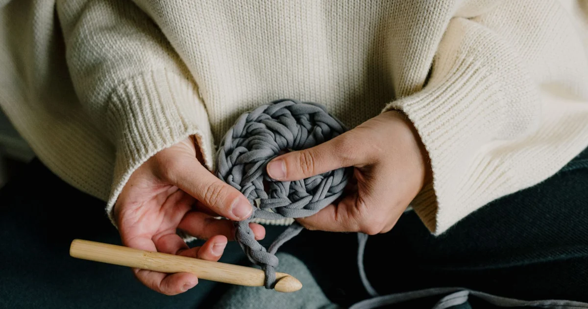

Tools, Yarn & Materials · Beginner guide
How Much Yarn Do You Need for a Crochet Project?
Estimate yarn from the pattern’s yardage, then account for any change in size, stitch, yarn, or gauge.

There is no reliable universal amount for a project based on its name alone. A swatch and the pattern’s dimensions are better guides than a generic estimate.
Before you begin
Find the pattern yardage and the yarn’s length per skein. Keep the same weight and fiber where possible, and save the dye-lot information.
Step-by-step instructions
- Read the yardage estimate for the pattern size you plan to make.
- Compare the pattern yarn’s length per skein with the yarn you want to use.
- Make a gauge swatch and measure your planned project dimensions.
- Buy enough from a matching dye lot, allowing a modest margin if you are changing yarn or size.
How to check your work
Your estimate should be based on length, gauge, and project dimensions. If the substitution or stitch pattern differs, treat the pattern yardage as a guide rather than an exact prediction.
Common beginner problems
- I am running short before the project is done: Stop before the final skein is gone and compare remaining yardage with the pattern plan; try to match dye lot.
- My substitute skein has fewer yards: Calculate using length per skein, not grams alone.
- My swatch uses more yarn than expected: Recheck gauge and stitch pattern; denser fabric or a larger size can require more yarn.
A practical estimate
If a pattern uses 900 yards and each skein has 225 yards, four skeins cover the listed yardage. Add a margin when the yarn or gauge differs; this simple division does not predict every project exactly.
Frequently asked questions
Can I estimate from skein weight?
Use yardage or meters when available. Skeins of equal weight can contain different lengths.
Should I buy an extra skein?
For visible color matching or dye-lot concerns, having extra from the same lot can help; consider the pattern’s estimate and return policy.
Does gauge change yarn use?
Yes. A tighter or denser fabric can use more yarn; swatch before calculating a substitution.